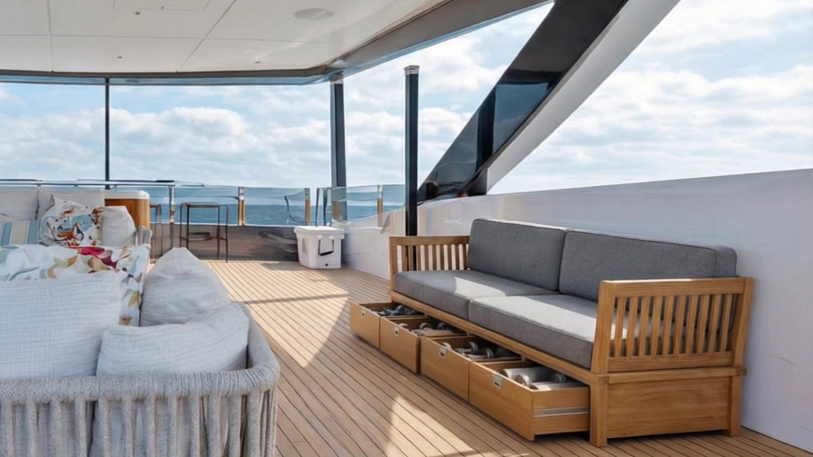

01
Weight + Structure
Equipment load, placement, anchoring, and distribution coordinated with the vessel’s technical team.
Performance Edge creates function-led onboard wellness environments around the constraints that matter at sea—structure, weight, corrosion, movement, storage, crew operations, and the vessel’s design language.
Discuss Your VesselA yacht gym is a structural and operational problem before it becomes an equipment plan.
Land-based equipment cannot simply be placed on deck and expected to work. Weight affects the vessel. Salt air attacks materials. Shared spaces change purpose throughout the day. Anything portable creates work for the crew.
We resolve those realities with the naval architect, builder, crew, interior team, and owner—so the space performs when it is needed and disappears when it is not.
Equipment load, placement, anchoring, and distribution coordinated with the vessel’s technical team.
Corrosion-resistant frames, hardware, upholstery, and finishes selected for humidity and salt exposure.
Training functions integrated into furniture, storage, and shared decks without compromising hospitality.
A compact performance system built around the owner’s program rather than a catalogue of machines.
Set-up, breakdown, storage, cleaning, access, and safety considered from the crew’s point of view.
Specifications and decisions coordinated across ownership, design, engineering, shipyard, and vendors.

A convertible wellness system integrates the rack, bench, free weights, accessories, and cold-plunge recovery into life aboard—ready for training, then restored as a social deck.
“We built the equipment into the furniture instead of placing furniture around it.”
Performance Edge originated and designed the convertible couch concept. Paragon Studio executed and fabricated the bespoke piece, and Chill Bunny Wellness supplied the cold plunge from Australia.
New-build and refit teams planning a dedicated or convertible training environment.
Owners who want serious training capability without sacrificing deck or interior design.
Naval architects, yacht designers, captains, and builders who need a performance specialist.
Existing vessels replacing corroded, poorly stored, or operationally disruptive equipment.
Training requirements, vessel use, project stage, locations, and priorities.
Structure, weight, access, exposure, movement, storage, and crew workflow.
Dedicated or convertible layout, equipment system, and design direction.
Marine-suitable equipment, hardware, finishes, anchoring, and storage.
Decisions aligned with the naval architect, yard, builder, interior team, and crew.
Delivery and installation oversight followed by testing and handover.
Before equipment is ordered—and ideally while structure, interiors, electrical requirements, access, and weight distribution are still being resolved.
Yes. Canoe Canoe demonstrates how training equipment can be integrated into bespoke furniture so a deck can change functions without daily equipment handling.
Yes. Marine gym design requires collaboration with the owner, captain, naval architect, yacht designer, builder or shipyard, crew, and specialist fabricators.
Tell us about the yacht, project stage, available space, cruising environment, and training requirements.
Start a Conversation